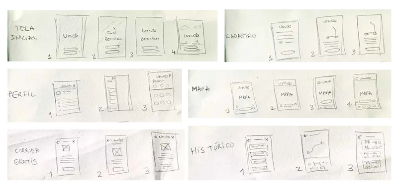

Umob: Aluguel de patinetes para mobilidade universitária
Minha Função
UI/UX Designer
Ferramentas
Figma, Google Forms, Notion
Duração
4 semanas
O Desafio
Projetar uma solução de micromobilidade para reduzir o tempo de deslocamento e a dificuldade de transporte dentro do campus universitário da Universidade Federal do Maranhão.
Sobre o Projeto
Umob é um aplicativo de micromobilidade desenvolvido para melhorar a locomoção dentro do campus universitário da UFMA. O projeto envolveu pesquisa com usuários, definição de personas, arquitetura da informação, wireframes, identidade visual e protótipos de alta fidelidade.
O Desafio
Como poderíamos criar uma solução de transporte alternativa, segura, acessível e sustentável que realmente atendesse às necessidades de locomoção dentro do campus?
A Universidade Federal do Maranhão (UFMA), com mais de 30 mil alunos, enfrenta um paradoxo: apesar de seu vasto campus, a mobilidade interna é extremamente precária. Alunos e servidores dependem do transporte público (ônibus) ou são forçados a caminhar longas distâncias entre os prédios, sujeitos à insegurança, ao clima rigoroso (sol e chuva) e à falta de acessibilidade. Em entrevistas com 22 membros da comunidade, o sentimento era unânime: 100% dos entrevistados citaram a falta de segurança como o principal problema, e todos preferiam se locomover a pé a esperar por um ônibus cheio e com horários incertos.
1. Mapeando os Problemas
Para entender a fundo a realidade dos usuários, conduzi uma pesquisa qualitativa com 22 pessoas, incluindo alunos de graduação e servidores da universidade. O objetivo era mapear as principais dores na jornada de locomoção diária.
Sinalização pouca ou inexistente
Falta de proteção contra sol e chuva
Infraestrutura precária
Se sentem inseguros
2. Pesquisa e Descobertas
Grupo focal com 14 estudantes revelou: 60% se locomovem a pé de 3 a 5x por semana e 60% consideram necessário um transporte alternativo. Apesar da receptividade, poucos tinham experiência com apps de micromobilidade, reforçando o caráter inovador da proposta.
Para entender como outras instituições de ensino no Brasil resolveram problemas parecidos, foi realizada uma análise de similares. O foco era aprender com os acertos e erros de projetos já existentes.
Diferentes projetos de mobilidade dentro de universidades foram considerados, sendo três deles os escolhidos como de mais relevância:
Vamos de Bici (UNILA)
Foco em locomoção entre unidades e reparos feitos pelos próprios alunos
Univates (RS)
Sistema integrado com o cartão institucional para desbloqueio
UFRJ (RJ)
Parceria com empresa privada (Serttel) e uso de app

3. Personas
Com base na pesquisa, foram criadas personas que representam os principais perfis de usuários do campus, suas necessidades, frustrações e objetivos.

4. Definindo a Solução: A Escolha do Veículo
Realizei uma análise comparativa sistemática, avaliando diferentes tipos de veículos (motorizados e não-motorizados) com base em custo, manutenção, sustentabilidade e facilidade de uso.

5. A Solução: Umob
Umob é um serviço de compartilhamento de patinetes que oferece uma forma rápida, segura e divertida para se locomover pelo campus da UFMA. Através de um aplicativo simples, o usuário pode localizar, desbloquear e pagar por seu trajeto em poucos segundos.
6. Jornada do Usuário
Mapeamento completo da jornada do usuário, desde o primeiro contato com o app até a conclusão da viagem.

7. Análise de Aplicativos Similares
Estudo de referências de mercado para identificar padrões de design, fluxos de navegação e funcionalidades essenciais.

8. Briefing do Produto
Definição clara dos requisitos obrigatórios, desejáveis e opcionais do produto.

9. Card Sorting
Organização das funcionalidades e conteúdos do aplicativo através de testes de card sorting com usuários reais.

10. Arquitetura da Informação
Estruturação da navegação e hierarquia de informações do aplicativo.

11. Ideias Iniciais (Rabiscos em Papel)
Primeiros esboços e conceitos desenvolvidos manualmente para explorar diferentes abordagens.
12. Wireframes
Desenvolvimento de wireframes de baixa e média fidelidade para validar fluxos e layouts.

13. Style Guide
Definição da identidade visual: cores, tipografia, iconografia e componentes do sistema de design.

14. Galeria Visual - Protótipo Final
Telas finais de alta fidelidade do aplicativo Umob.

Conclusão
Este projeto foi fundamental para aprender a balancear as necessidades do usuário com as limitações técnicas e de negócio. O feedback dos testes de usabilidade foi crucial para simplificar o fluxo de pagamento e tornar a experiência mais intuitiva. Aprendi também a importância de considerar diferentes contextos de uso, como variações de iluminação externa que afetam a legibilidade da tela, e como a pesquisa profunda com usuários reais é essencial para criar soluções que verdadeiramente resolvem problemas.